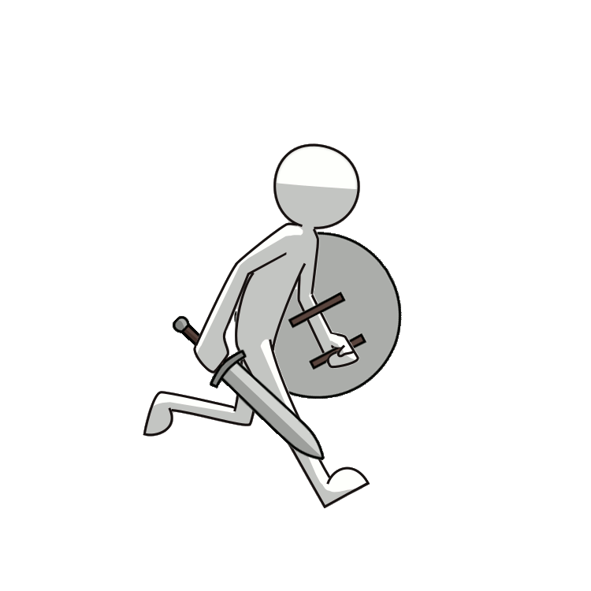

Menampilkan Gambar Ikon dan Images (jpg/png/gif)
Siswa belajar mengenai cara membuat halaman web dengan HTML sebagai dasar pembuatan situs web

Video
- Dari Komputer
Martin Garrix - Hold On & Believe
- Dari Youtube
Kiki's Delivery Service - A Town With An Ocean View (Piano)